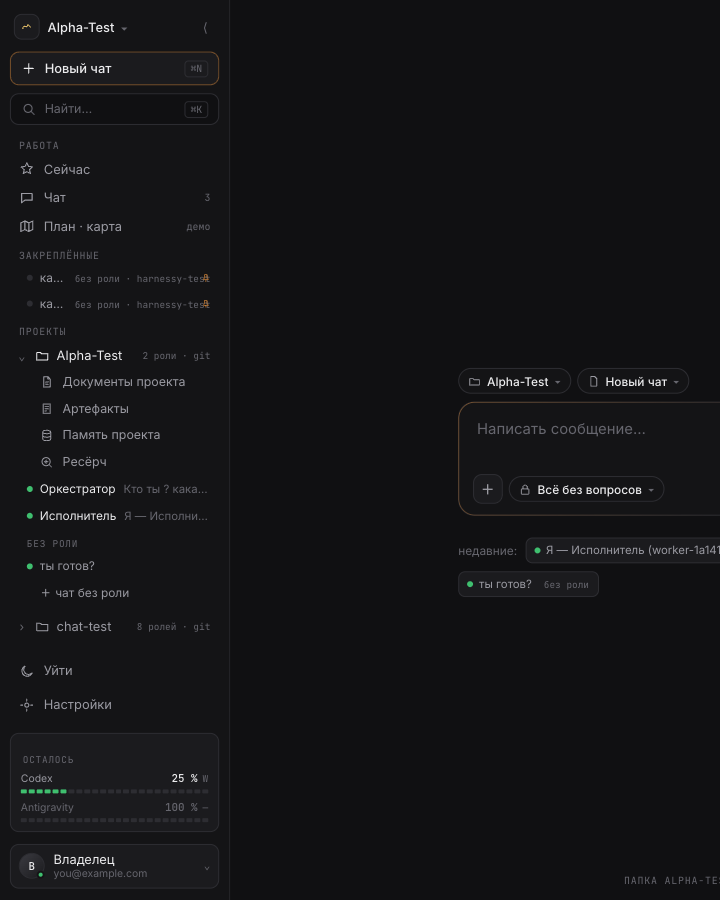

Концепция А «список сессий» с рейкой из В (слово владельца 22.10). В панели один вид объекта — чат; роль — метка в строке; точка — состояние (идёт ход · ждёт вас · ошибка · тихо). Сверху Новый чат ⌘N и Найти ⌘K, строка-фильтр «Ждёт вас» вместо «Сейчас», закреплённые коротко, другие проекты свёрнуты, низ — лимиты строкой и профиль ▾ (меню вверх: Облик · Профиль · Подключения · Настройки · Журнал · Справка · Клавиши · Уйти из проекта · Выйти). Разделы проекта и План · карта · Путь — вкладки шапки рабочей области. Чип проекта из композера убран — проект меняется только в шапке панели. Рейка: пункт только за живым экраном. Экран-основа — «Новый чат», данные движка (Alpha-Test, Оркестратор · Исполнитель, 9 других проектов, лимиты Claude 64 % W · Codex 91 % W). Элементы — дизайн-код · sidebar-v2-spec. ← все скетчи
Меню профиля — по референсу disarto «Sidebar state & variations» (слово владельца 22.10): раскрытие вверх от карточки, приглушение низа, состав; не калька — пункты, слова и цвета наши (дизайн-код · profile-menu).
Снимок живого прототипа, уменьшен до 72 %. Пометки — диагноз из концепции (разделы 2–3): 1 уровни · 2 дубли · 3 низ · 4 слова.

1111 222222 3 4444Четыре уровня с одним отступом. Экран приложения (РАБОТА: Сейчас · Чат · План) → раздел проекта (Документы · Артефакты · Память · Ресёрч) → роль (Оркестратор · Исполнитель) → чат («ты готов?»). Глазу не за что зацепиться: где я — видно только по подсветке «Новый чат». Раскрытый проект съедает треть высоты.
Один факт — три места. Проект: шапка панели · строка дерева · чип композера. Новый чат: кнопка ⌘N · «＋ чат без роли» · ⌘K. Закреплённые ≈ недавние под полем ≈ чаты дерева. Роль: в строке чата и в чипе композера.
Низ: четыре разнородных блока на ~240 px. Уйти · Настройки · виджет лимитов (три строки) · карточка владельца. Лимиты нужны раз в день, место занимают всегда.
Слова, которых нет у референсов. «Сейчас», «Уйти», заголовок «БЕЗ РОЛИ», пометка «демо». Ни в Claude Code, ни в Codex, ни в Antigravity таких пунктов нет.
Рейка — то же дерево, просто узко: Новый чат · Найти · Ждёт вас (бейдж) · Чаты · Закреплённые · Проекты · низ: кольцо лимитов · профиль. Подсказки по наведению. Выбранный по умолчанию вариант — для него ниже кадр рейки и кадр 390.
Клик по карточке — меню шириной в панель поднимается над строкой лимитов; строка лимитов под ним приглушена, карточка поверх. Состав: шапка с бейджем тарифа · Облик (тумблер) · Профиль · Подключения · Настройки ⌘, · Журнал · Справка ↗ · Клавиши ⌘/ · Уйти из проекта · Выйти (бордо, только при входе на сайте) · подвал: версия · условия. Закрытие — клик вне, Esc, повтор по карточке. Кадр живой: карточку можно кликать и здесь, и в кадре A1 выше.
Документы · Артефакты · Память · Ресёрч → вкладки шапки рабочей области (ряд над приветствием). План · карта, Путь → туда же. «Сейчас» → строка «Ждёт вас · N» над чатами; клик — экран решений. Журнал · Настройки · Уйти → меню профиля (Уйти — «Уйти из проекта»). Дерево проекта с ролями → одна группа «Чаты · Alpha-Test», роль — метка справа. Другие проекты → одна свёрнутая строка «Другие проекты · 9». Виджет лимитов → одна строка Claude · Codex, клик — попап «Все лимиты» (скетч 27). «＋ чат без роли», чип проекта в композере, заголовок «без роли», пометка «демо» → убраны.
Порядок как в широкой панели. Пункт «Проекты» открывает список других проектов поверх рейки (не нарисовано — то же меню, что у «проект ▾»). Кольцо — остаток по самому близкому к пределу провайдеру (Claude 64 %), клик — попап «Все лимиты».
Клик по аватару внизу рейки. Меню то же, что в широкой панели; кольцо лимитов под ним приглушено, аватар поверх (▴ в рейке нет — рамка аватара светлее). Закрытие — клик вне, Esc, аватар.
Ничего дополнительно: рейка = широкая панель без подписей. Закреплённые и Проекты раскрываются поверх рейки меню по клику; «Чаты» разворачивает панель обратно (как «Explorer» в VS Code при клике по активному). Ряд вкладок в шапке остаётся — рейка его не меняет.
Рейка: Новый чат · Найти · Чаты · Ждёт вас (N) · Проект · Команда · низ: кольцо лимитов · профиль. Панель 280 — содержимое режима; «Чаты» — список как в A1. Панель можно закрепить (булавка в шапке) или отпустить — тогда прячется по клику в рабочую область. Шапка рабочей области без вкладок: разделы проекта в режиме «Проект».
Всё, что не чаты, — в режимы рейки: Документы · Артефакты · Память · Ресёрч · План · карта · Путь → режим «Проект»; роли, стая, датчики → режим «Команда»; «Сейчас» → пункт рейки «Ждёт вас» с бейджем + экран решений; Журнал · Настройки · Уйти → профиль. Проект меняется в шапке панели режима (Alpha-Test ▾). Ряда вкладок в шапке рабочей области нет — его роль у режима «Проект». Чип проекта из композера убран.
Клик по «Проект» в рейке. Сверху — карточка «где я»: имя, git, роли, что ждёт. Ниже — разделы: Документы · Артефакты · Память · Ресёрч · План · карта · Путь, за нежитыми — плашка «макет». Внизу — «Другие проекты · 9». Рабочая область не меняется.
Карточка проекта — из «проект ▾» и строки дерева «Alpha-Test · 2 роли · git»; разделы — четыре подпункта дерева + «План · карта» из РАБОТА + «Путь» (скетч 28, пока макет). «Другие проекты · 9» — те же свёрнутые папки дерева, по клику проект меняется, панель остаётся в режиме «Проект».
Панель 240: проект ▾ · Новый чат · Найти · Ждёт вас · чаты (закреплённые сверху с булавкой, не отдельной группой) · Другие проекты · низ: лимиты + профиль. Рейка по ⟨ — только четыре иконки: Новый чат · Найти · Ждёт вас · Профиль (кадр не нарисован: см. рейку в дизайн-коде). Шапка рабочей области: Чат · Документы · Артефакты · Память · Ресёрч · План · карта · Путь.
Как в A1, плюс: группа «Закреплённые» → булавка у строки, закреплённые просто первые в списке; группа РАБОТА целиком → вкладки шапки («Чат» — первая вкладка); Закреплённые · Проекты в рейке → их нет, рейка из четырёх пунктов, остальное ⌘K. Панель короче A1 на одну группу и 20 px уже.
Тот же экран в ширине ноутбука. Вкладки шапки не переносятся, композер 760 по центру, «недавние» в одну-две строки.
Вкладки занимают ~640 px из 1040 — справа остаётся место под статус «подключено». Панель 240 не режет метки ролей: «Оркестратор» и «Исполнитель» помещаются справа от названия чата (до ~46 % ширины строки). При 1280 панель A3 равна по высоте A1, но без группы «Закреплённые» — 7 строк вместо 9.
Панель 300 px, строки выше (34 px), низ тот же: лимиты строкой + профиль. Вкладки шапки на телефоне — горизонтальная прокрутка ряда (не нарисовано: рабочая область за панелью).
На 390 панель — выдвижной слой (как m-drawer прототипа), не колонка. Те же классы .ps: воркер переносит одну разметку, меняется только контейнер. «Другие проекты · 9» на телефоне раскрывается списком внутри панели, не меню.
| блок сейчас | A1 · панель + рейка-сжатие | A2 · рейка-режимы + панель | A3 · только панель |
|---|---|---|---|
| проект ▾ (шапка) | шапка панели · то же | шапка панели режима («Чаты · Alpha-Test ▾») | шапка панели · то же |
| ⟨ свёртка | в рейку 56 с теми же пунктами | нет — рейка постоянна; ⟨ отпускает панель | в рейку из 4 иконок |
| Новый чат ⌘N · Найти ⌘K | сверху · то же | рейка (1-й и 2-й пункты) | сверху · то же |
| Сейчас (РАБОТА) | строка «Ждёт вас · N» над чатами | пункт рейки «Ждёт вас» с бейджем | строка «Ждёт вас · N» |
| Чат (счётчик) | группа «Чаты · Alpha-Test» | режим «Чаты» (по умолчанию открыт) | список чатов без заголовка-группы |
| План · карта | вкладка шапки | режим «Проект» | вкладка шапки |
| Закреплённые | группа ≤3 строки, «ещё» → поиск | группа в режиме «Чаты» | булавка у строки, первые в списке |
| Документы · Артефакты · Память · Ресёрч | вкладки шапки | режим «Проект» | вкладки шапки |
| чаты по ролям, БЕЗ РОЛИ, ＋ чат без роли | одна группа, роль — метка; заголовка и «＋» нет | то же в режиме «Чаты» | то же |
| другие проекты (свёрнутые папки) | «Другие проекты · 9» → список | низ режимов «Чаты» и «Проект» | «Другие проекты · 9» → список |
| Журнал | меню профиля | меню профиля | меню профиля |
| Уйти · Настройки | меню профиля («Уйти из проекта») | меню профиля | меню профиля |
| виджет ОСТАЛОСЬ | одна строка · клик → попап 27 | кольцо в рейке · клик → попап 27 | одна строка · клик → попап 27 |
| карточка пользователя (имя) ▾ | профиль ▾ · меню вверх по референсу disarto (Облик · Профиль · Подключения · Настройки · Журнал · Справка · Клавиши · Уйти из проекта · Выйти) | аватар в рейке · то же меню вверх, 240 px | профиль ▾ · меню вверх по референсу disarto |
| Стая · Датчики (сейчас только через ⌘K и телефон) | ⌘K; вкладка шапки, когда экран живой | режим «Команда» (пункт рейки — за живым экраном) | ⌘K |
| чип проекта в композере | убран | убран | убран |